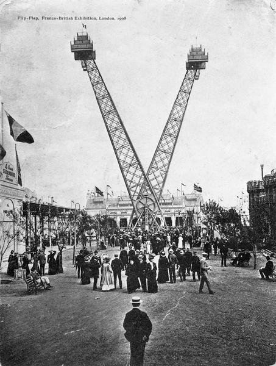

The real stuff of the poetry of our day
: Negotiating the Edwardian Crowd
I should say, to put a personal confession on record, that the very strongest emotion …that I have ever had was when I first went to the Shepherd’s Bush Exhibition and came out on a great square of white buildings all outlined with lights. [….] There were crowds and crowds of people—or no, there was, spread out beneath the lights, an infinite moving mass of black, with white faces turned up to the light, moving slowly, quickly, not moving at all, being obscured, reappearing…
I know that the immediate reflection will come to almost any reader that this is nonsense or an affectation.
How,he will say,is any emotion to be roused by the mere sight of a Shepherd’s Bush exhibition? Poetry is written about love; about country lanes; about the singing of birds…I think it is not—not now-a-days. We are too far from these things. What we are in, that which is all around us, is the Crowd—the Crowd blindly looking for joy or for that most pathetic of all things, the good time. I think that is why I felt so profound an emotion on that occasion. It must have been the feeling—not the thought—of all these good, kind, nice people, this immense Crowd suddenly let loose upon a sort of Tom Tiddler’s ground to pick up the glittering splinters of glass that are Romance; hesitant but certain vistas of adventure, if no more than the adventures of their own souls; like cattle in a herd suddenly let into a very rich field and hesitant before the enamel of daisies, the long herbage, the rushes fringing the stream at the end.I think pathos and poetry are to be found beneath those lights and in those sounds—in the larking of the anaemic girls; in the shoulders of the women in evening dress, in the idealism of a pickpocket slanting through a shadow and imagining himself a hero whose end will be wealth and permanent apartments in the Savoy Hotel. For such dreamers of dreams there are.
That indeed appears to me—and I am writing as seriously as I can—the real stuff of the poetry of our day.1
Baudelaire’s painter of modern life
, Walther Benjamin’s Flâneur—they are familiar figures,2 standing at the threshold of the modern, showing those who come after them how to be modernist. Ford Maddox Hueffer’s poet of the crowd, visiting the busy exhibition ground at Shepherd’s Bush for the first time (perhaps in the summer of its grand opening, 1908, when the west-London showground hosted the Franco-British Exhibition, and the visiting hordes could be counted in their hundred thousands)3 is a less familiar figure.
And yet, reading Ford’s hopeful manifesto for a poetry of that which is all around us
, a poetry of the Crowd, I seem to sense the same moment of modern epiphany, a moment—albeit on a less ambitious scale—when new ways of relating to a changed world reveal themselves.
What we are in now is the crowd
: Ford’s statement, I will argue, can be seen as a launching point for the modern movement in England. Writers would react to the questions (and answers) that he raises in different ways. In the case of Ezra Pound, those different ways of reacting could be combined in one poet: on the one hand, I will argue, Ford’s image is pertinent to our understanding of Pound’s imagist poems. But on the other, there is a very different Pound who we can dig up, who was working at the same time as the well-known imagist Pound, and who saw Ford’s invitation to join the crowd as an invitation to engage with a popular Edwardian literary scene.
At the end of my introduction, I referred to E. P. Thompson’s view of the crowd in the eighteenth century as the carrier of a traditional moral economy—this eighteenth-century crowd would later fade from view. It may be appropriate, in the following argument, to keep the idea of a traditional
, and largely eclipsed model of a rational crowd
in mind: this is the kind of crowd that this second, very different Pound seems to be addressing—a crowd who seem to resist the transforming maelstrom of modernity.
what we are in now is the crowd
: a native theory of modernity
Picture the scene: in later years, it was almost impossible to believe that the opening had been dampened by the weather: An exhibition must have blue skies to see it off; it is a depressing spectacle when the merry palaces that give it charm and character are all adrip.
4 To Virginia Woolf, looking back from the 1930s, it seemed almost inconceivable that there could be trouble from this source. The area was too small; the light was too brilliant.
5

The White City, Shepherd’s Bush, was built for the Franco-British Exhibition in 1908, and hosted that year’s Olympic games.6 The most fascinating attraction in the Amusement Section
was the Gigantic Flip-Flap
(plate 2); other attractions included an Irish Village, a Mountain Scenic Railway, and a wide variety of exhibition courts that could be brilliantly illuminated during the hours of darkness.7
Such exhibition grounds feature prominently in the modern imagination: in King Vidor’s film, The Crowd, for example, we see the hero, John Simms, take his future wife, Mary, on a date to Coney Island, where the urban landscape of pleasure acts as a carnivalesque foil to the geometric order of the office sets.8
Ford’s description has something of this fairyland quality: what does it mean though, to be in the crowd
? As a test-case, I want to look at Ezra Pound’s famous crowd poem, In a Station of the Metro
, and particularly at the narrative Pound built up about how he came to write it.
Ezra Pound, critics rarely remember, saw Ford’s Shepherd’s Bush essay as a central inspiration for In a Station of the Metro
: in a later discussion of his experience on the Metro platform in Paris, Pound spoke of an interesting account of a similar adventure of his own
, which Hueffer had written.9 We’ll return to the importance that Pound ascribed to Ford’s vision of the crowd both at the time, and as he looked back later in his career, as the Cantos were under way.
But before we get there, I want to look at the kind of work Pound was producing in 1913, thinking about the various ways it might engage with Ford’s declaration that what we are in now is the crowd
; how it might owe its success to a sort of fence-sitting strategy, simultaneously addressing a modern crowd world whilst imagining itself as having significance in a strange and ancient place, far from London’s marketing bustle. By the end of the chapter, I’ll work my way back to thinking about the T. P. ’s readership, and about the role of a crowd-art in forming their experience.
In 1912 and 1913, the popular literary magazine T. P.’s Weekly ran a series of short, autobiographical articles by some of the best selling writers of the day:
HOW THEY BEGAN. The series of autobiographies entitled
How I Began,has aroused so much interest among my readers that I have decided to continue it throughout the year. Already the following have contributed (and those waiting to appear are no less interesting):—A. St. John Adcock, William Archer, Marjorie Bowen, Hall Caine, W. H. Davies, George Edgar, Jeffrey Farnol, Charles Garvice, Frederic Harrison, Bart Kennedy, Neil Lyons, Oliver Onions, Stephen Phillips, Stephen Reynolds, Clarence Rook, Wilkinson Sherron, Edward Thomas, E. Temple Thurston, Katherine Tynan, Kate Douglas Wiggin, and Compton Mackenzie. It has occurred to me that many readers would like to collect the whole series, mount the articles on brown paper, and bind them into an album, calling itAuthors I Have Read,or some such title. They will not be published in book form, and some day when the less known are famous and the old favourites are gone, such a collection will be good to ponder over. Back numbers (so far) can be had for 1½ d. post free, from the manager.10
The old favourites are gone
—who now would bother to read Charles Garvice, the most popular author of the moment
, who sold more than seven million light romances between 1899 and 1920;11 or Hall Caine, who could boast that as much money has come to me…as ever came to anyone now living who followed the profession of the pen
; or Jeffrey Farnol, author of The Broad Highway (1910), the popular apotheosis of historical romance
?12 These pasted-in people, cut off from the popular literary institutions which once gave them their significance, and from the network of readers to whom they were contemporaries and favourites
, Authors I Have Read
, seem irrelevant. The idea that some hobbyist might have fallen for T. P.’s sales ploy and tried to collect the whole series in a makeshift book seems mildly tragic, like the photograph album of a dead stranger. Attempting to invest scraps of ephemera with lasting personal value, the collector succeeds only in showing the dependence of value upon ephemeral audiences, upon fractured markets with fast turnarounds.
And yet there’s more that can be said about these wastepaper remains of pre-war literary consumption, because the How I Began
series constitutes a small challenge to some versions of what literary modernism was supposed to have been: it presents one of the most discussed of modern poems in a surprisingly populist context. Thirty-two pages into Authors I Have Read
(assuming it’s the full collection), sandwiched between Frank T. Bullen (Novelist of the Sea, Author of
)13 and Bernard Capes (an author The Cruise of the Catchalot,
&c.well suited to the stage of a tenth-rate music-hall, if there be one so low
, displaying Board school wit and Board school manners at every turn
),14 we’d find Ezra Pound’s How I Began
. And at the end of the article, he rounds up with the first British publication of In a Station of the Metro
(less its title)—the poem had already appeared in the Chicago-based magazine, Poetry15—together with the famous account of the crowd-experience from which it arose:
For well over a year I have been trying to make a poem of a very beautiful thing that befell me in the Paris Underground. I got out of a train at, I think, La Concorde and in the jostle I saw a beautiful face, and then, turning suddenly, another and another, and then a beautiful child’s face, and then another beautiful face. All that day I tried to find words for what this made me feel. That night as I went home along the rue Raynouard I was still trying. I could get nothing but spots of colour. I remember thinking that if I had been a painter I might have started a wholly new school of painting. I tried to write the poem weeks afterwards in Italy, but found it useless. Then, only the other night, wondering how I should tell the adventure, it struck me that in Japan, where a work of art is not estimated by its acreage and where sixteen syllables are counted enough for a poem if you arrange and punctuate them properly, one might make a very little poem which would be translated as follows:—
``The apparition of these faces in the crowd:
Petals on a wet, black bough.16
The anecdote about how Pound came to write the poem (which he elaborated on in late 1914 in the Fortnightly Review)17 has often been discussed; the implications of the venue where it first appeared for this founding work
have never been noticed.
If Imagism is to modernist poetry as cubism is to modernist painting, then Pound’s
18 Picasso’s painting, Les demoiselles d’Avignon, had spent years sequestered and seen by only a handful of sympathetic artists, face to the wall or rolled up on the floor, in Picasso’s studio; it later hung in an unobtrusive spot in the home of the collector, Jacques Doucet, occasionally spoken of but hardly seen until it was acquired by the Museum of Modern Art in 1937.19 It is, one might argue, iconographic primarily of the private nature of modernist art, divorced from the attentions of the public, the crowd. But here we have what DeKoven described as modernism’s other In a Station of the Metro
is comparable to Les demoiselles d’Avignon
as a founding work and icon.founding work and icon
, a poem about a crowd, placed before a huge audience.
T. P.’s Weekly reached half a million readers a week: the new working-class readership, created by the 1870 Education Act; clerks pursuing self-culture
(practically every bank clerk
, wrote one correspondent, read T. P.’s);20 girls from the Association of Shorthand-writers and Typists.21 It’s been characterised as little more than a pennyworth of rambling anecdotes about literature
; a more literary and instructive version of Tit-Bits
,22 the hugely popular snippet
paper with which Bloom, visiting his jakes near the beginning of Ulysses, wiped himself
.23 It’s clearly not the kind of magazine that one would normally locate anywhere near the foundations of Anglo-American modernism. It is no Egoist or Little Review, a loss-making enterprise, elite, experimental and exclusive; on the contrary, it’s a part and parcel of the literary mass-market it promotes, offering an audience the pleasures of cheap, available print: Hall Caine, The Broad Highway, and the dignity of self-culture
.
But although Pound, in his How I Began
piece, has to think about how he’ll relate his work to this literary mass market, he clearly isn’t entering into the spirit of it. Something more complicated is going on: Pound imagines In a Station of the Metro
being sequestered far away in Japan, because there, or in some other, very old, very quiet civilisation, some one else might understand the significance
. He obsesses over money, over the marketing of his verse, reeling out what would become one of his favourite anecdotes, about how Elkin Mathews agreed to bear the expense for publishing his poems, and going on to describe how, having written The Ballad of the Goodly Fere
(perhaps Pound’s only unqualified popular success, and a poem which supposedly set the Thames on fire
24) he peddled the poem about in Fleet Street, for I began to realise that for the first time in my life I had written something that
25everyone could understand
and I wanted it to go to the people.
Such Grub-Street tales were bread-and-butter to the How I Began
series, fitting in with the kind of late-Victorian and Edwardian ideas about writing as a profession which Peter Keating has described.26 The series (and especially articles like Compton Mackenzie’s and Oliver Onions’s, working-class heroes who rose
to literary fame), would undoubtedly have fired the literary ambitions of T. P. ’s readers, the aspiring writers who, as advertised in every issue, paid one shilling per thousand words proofread (or, in the case of poetry, sixpence for every twenty lines) for the magazine’s literary help
service.27 But Pound struggles to reconcile his hedging of the literary market with his far from practical, everyday view of creative forces. He ascribes to his poems a mysterious impulse
, like a new and strange adventure
; I have come in touch with the tradition of the dead
: such hints seem to prepare his readers for the powerful, strange and ancient qualities which he claims for his little Metro poem.
apparitions of the crowd
In a Station of the Metro
The apparition of these faces in the crowd;
Petals on a wet, black bough.28
Of all the tense, terse, metropolitan poems that Ezra Pound produced during 1913 and 1914—the poems which would eventually form the first part of his volume Lustra (1916)—In a Station of the Metro
has stood out as a striking testament to the transformative power of the modernist art work. The spectral, shifting crowd, in which these disembodied faces appear (we should probably expect them to dissolve, too, as quickly as they appeared), is given, in what seems like a moment of aesthetic inspiration, a fixed form. It’s suddenly made to fit the natural
, recognisably poetic
shape of a spring bough, and as if by magic, the contingencies and vaguely sinister underground infrastructures of modern city life seem to cohere in the form of a carefully-crafted lyrical object.
This apparent organic wholeness is achieved through considerable artifice. Pound has invented a wonderful new verbless language which is able to capture fleeting, mysterious relationships. The now-famous first printing of the poem, which carefully controlled the positioning of typographic signs on the page , intensifies (through what one influential scholar called its extreme performativity
)29 our sense of the bringing-into-relation of discrete poetic units:
The apparition
of these faces
in the crowd :
Petalson a wet, black
bough .30
Because it is built up from simple prepositional phrases—of the metro
, of these faces
, in the crowd
, on a…bough
—which describe the precise relation of one thing to another, of station to metro, petals to bough, the poem suggests that other, seemingly nebulous things—a crowd-apparition, imaginary blossoms; primary forms
as Pound calls them31—could stand in a similarly precise grammatical
relationship. Each reader seems intuitively to discern some internal logic in this new language of primary forms
; we’ve only to follow it and we shall have apprehended the apparition
, we shall have got Pound’s Metro-emotion
fast-frozen. In a Station of the Metro
invites us to read the relation between crowd and bough not as something mysterious, to be questioned and puzzled over, but as something to be seized in an instant, terms boldly conjoined; by extension (a long shot, perhaps, to claim such portentousness for such a tiny poem), it suggests that we might completely apprehend the relationships between things out there in the world as though they were signs in one of these new artworks. The poem thus effects a change in the way that crowd-life can be seen and described: it asks us to imagine a world where the fleeting, vertiginous psychological states of modern mass life become miraculously transformed, replaced by an aesthetic condition in which things are made measurable and recordable, invested with a lasting value.
For such a tiny poem, In a Station of the Metro
raises lots of questions. My sketchy account, I know, leaves most of them unanswered, emphasising just those qualities which make In a Station of the Metro
seem to me an archetypally modernist
artwork. I’ve been very vague and mysterious about the precise relationship
that I say the poem seems to capture, and have ignored, for the time being, any other critical voices which might justify my claim that the poem has stood out
from others in Lustra. But the poem’s insistence that, by revolutionising the materials with which it works, it can transform the unaccountable apparition
of dissevered, crowding faces into something rooted and vital, seems to me to provide a way into a question which (as that sense of revolutionary possibility becomes a matter of literary history) has been increasingly central to our critical attempts to understand and re-evaluate cultural modernism
.
Namely, how does this transformation, effected by the modernist artwork, relate to the station-platform jostle itself, to the experiences which it affects to transform? Does In a Station of the Metro
suggest some affinity between new art and crowd life?; is its new way of seeing inherent to the new conditions of mental life which, in the fashionable pop-psychology of the day, found their apotheosis in the crowd? Or is it a subjective vision, occasioned and maybe even energized by a crowd, but lifted out of the everyday, appreciable only to the sensitive few who understand its special logic? Do these fluxile faces only achieve coherence in an autonomous realm of aesthetic experience—of liberation, in Pound’s frequently quoted phrase, from time limits and space limits
?32
I want to bring together Ford’s model of modernity-as-crowd with a reading of Pound’s Metro poem—I think this will help to clear up these inconsistencies, and enable us to better understand the Metro poem’s place in the development of a modern Anglo-American crowd-aesthetic, and the crowd-aesthetic’s place in the development of the schools of Anglo-American poetry in which Pound took a central role.
before the great divide
Through the 1980s and 1990s, this line of questioning has been brought into tighter critical focus by Andreas Huyssen’s distinction, in After the Great Divide, between classical modernism
and the historical avantgarde
.33 Yes, argues Huyssen, there was a tradition in early twentieth-century art which embraced the revolutionary potential of urban, technological mass culture; which tried, and ultimately failed, to free art from its aestheticist ghetto
and to create at the interstices of high art and mass culture
, an avantgarde art for the masses
: this, he calls the historical avantgarde
.34
But the modernist
tradition, Huyssen argues, was more like a reaction formation
which sought to set up a cordon sanitaire against the spreading ooze of massification
, against the haunting spectre
of the crowd. Modernism constituted itself through a conscious strategy of exclusion, an anxiety of contamination by its other
—and this repressed other
returned in images of the crowd as nature out of control
, in the theories pedalled by fin-de-siècle scientists like Gustave Le Bon, who saw the crowd as an irrational, hysterical, all-devouring threat to the bourgeois order, in which the boundaries of the rational self are dissolved away.35 The abstraction of modernist high art—the sense, in In a Station of the Metro
, that Pound can call the irrational crowd to order, transforming it into an identifiably poetic
flower-image—would thus be less a liberation…from time limits and space limits
, than a fortification against the encroachments…of modern mass culture,
a fear of the loss of identity…in the mass
.36
Such theoretical clarity, I think, is achieved at the expense of historical nuance. Huyssen admits that there are areas of overlap between the tradition of the avant-garde and that of modernism (e.g., vorticism and Ezra Pound…)
.37 But a close look at the career of any one candidate for modernism
will reveal more complex and less consistent links than the running feud with mass society and mass culture
that Huyssen suggests: think of Eliot’s enthusiastic interest in music hall and jazz (he would have loved Cats
, according to Frank Lentricchia—an opinion which David Chinitz, in his landmark study of the popular Eliot, almost goes along with: he would have been only too happy to collaborate on the most popular Broadway musical of all time
),38 or of Kill that Fly, the popular variety show based on
Wyndham Lewis’s paintings in the Cabaret Theatre Club, which were themselves based on
dances popularised in variety shows.39 Mass culture
, for the modernists, was not one monolithic formation.
This, for me, is the point about 1913: back before the First World War, the commodified sphere of leisure that we call mass society and mass culture
and other, more marvellous aspects of the mass, couldn’t be so easily lumped together: they represented competing theories of society, which were hotly debated in the very magazines where Pound published. One example: an article in a 1913 copy of the New Age (where Pound’s articles on the importance of propaganda
to an American Renaissance would shortly appear, and his series on London politics, that continuous torrent process
, had just finished)40 characterised mass civilization as log rolling commercialism, the bane of artists
, pedalled by journalists and feuilletonistes
(and primarily by the Daily Mail’s Mr. Hamilton Fyfe
, the `mob’s model of a halfpenny ambassador, consolidating stupidity the world over
) for a neutral class
of menials and tradesman
who demand the debased comforts of material assurance
.41 So far, so familiar. But a few pages earlier, in the same magazine, Gustave Le Bon’s Modern Aphorisms
offer a compellingly different reading of the mass, not as something material, a newish commercial institution of halfpenny scribblers and marketing menials, but as dynamic mental energy: a collective revolutionary soul
, a mental structure built upon a long past
and guided by sensitive, mystic and collective elements
that are quite independent of reason
—conflicting psychological forces
whose material exteriorisation
, like an ectoplasmic fist, will revolutionize the world.42
The kind of art that might be appropriate to a mass culture
would thus be very different, depending on which model one accepted: a public who responded only to material assurance
would have to be approached very differently to one which could be transfused with sensitive, mystic and collective elements
. Pre-war, then, a theoretically-inclined writer looking to engage the larger audience might possibly reject the serialized feuilleton novels, popular and family magazines, the stuff of lending libraries, fictional bestsellers and the like
(to use Huyssen’s specimens)43 which nowadays lie uncovered as exhibits from which to build an account of mass culture. Instead, they might enthusiastically embrace the psychological dark-matter of the irrational, atavistic crowd
.
Before the war (which provoked a batch of native publications on crowd psychology, whose indebtedness to continental psychologists like Le Bon seem to have largely passed nonspecialist reviewers by),44 Le Bon was the best-known writer on crowds, and the securing of translation rights for his two sets of Aphorisms
(another lot had been published back in May 1912)45 is typical of the New Age’s ability to keep up with even the most unlikely (for a socialist British weekly) intellectual fashion. His Psychology des foules (1895) was immediately translated into fifteen foreign languages, has never been out of print, and is certainly one of the best selling scientific books of all time
;46 by the nineteen-tens, Le Bon’s scientific conclusions were so widely diffused in social and political commentary that they’d become almost, in Patrick Brantlinger’s words, intellectual kitsch
47. Le Bon ascribed to the crowd a mental unity
: the psychological crowd is a provisional being formed of heterogenous elements which for a moment are combined
. And thus combined, its elements take on new characteristics,
so that its properties are quite different from those of the bodies that have served to form it.
48
If this sounds a little like the technique of In a Station of the Metro
—the way discrete elements are brought together into a formal whole, assuming new characteristics
—then such superficial resemblances can be developed a little further. The ideas suggested to crowds…present themselves in the guise of images,
Le Bon wrote, and are only accessible to the masses under this form. These imagelike ideas are not connected by any logical bond or analogy or succession, and may take each other’s place like the slides of a magic-lantern which the operator withdraws from the groove in which they were placed one above the other.
Pound as magic-lanternist, flipping from a crowd-image to a bough-image as the diapositives, placed one above the other
slip from the cartridge of his poem-projector: he seems to have conceived imagism in rather similar terms. The
, Pound had written, discussing one image poem
In a Station of the Metro
, is a form of super-position, that is to say it is one idea set on top of another.
Such image-presentations possess a power beyond the merely cinematographal
presentation, though; they are said to direct a certain fluid force against circumstance,
and should be understood as conceiving instead of merely reflecting
49. The Metro poem reconfigures the world, much as Le Bon’s images, which are said to leave strong impressions
in the crowd’s unconscious mind, do.50
Michael Tratner, in Modernism and Mass Politics, holds the same passage from Le Bon up to In a Station of the Metro
, commenting that many of the most distinctive modernist effects seem to be described here: the juxtaposing, overlapping and rapid shifting of disparate images, the overlay of one image on top of another, the rapid shifting of images [sic]. Conversely it is not an accident that the most famous imagist poem…is about a crowd.
But once one has noted the similarities, where does one go? Images…imagelike ideas…Pound’s doctrine of the image
…: one is in danger of thinking like a crowd, of reasoning
through the association of dissimilar things possessing a merely apparent connection between each other, and the immediate generalisation of particular cases.
It’s one thing to note an apparent similarity between Pound’s images
and Le Bon’s; it’s quite another to go on and say, as Tratner does, that the Imagists were out to re-forge the crowd-soul—that modernist poets wanted to operate in the medium of the unconscious crowd mind itself
, impressing it, through contradictory flows of images
, with a new cultural unity
, a restored cultural center
51.
Pound’s images
tended to be found a long way from the unconscious crowd mind itself
; nor did the cliquey, specialist publishing ventures that he mainly associated with in 1913 do much to promote cultural unity (or when they did, when Poetry’s editor, Harriet Monroe, used a Whitman quote about great audiences
on the masthead, Pound protested loudly, distinguishing the few intelligent spirits
from the rabble…aimless and drifting
)52. Poetry, the Chicago magazine where In a Station of the Metro
first appeared that April, is typical of the little magazines where modernist poems were usually seen first, by a small handful of readers. Paid subscriptions for volumes one and two, 1912–13, were 1,030 (fit audience though few
was Harriet Monroe’s typical comment), and while a few of these made it to London, they were mostly going to writers in Pound’s clique53. A few months later, when it appeared in London’s New Freewoman, its readership was even tinier: in August 1913, the guaranteed circulation was just 266 copies per issue (of which 24 went to America), and sales of individual copies amounted to about 120 per issue.54 Even when it crops up in T. P.’s Weekly, not quite presented as a finished poem, there’s no suggestion that Pound sees himself as a crowd-mastering orator; the poem is merely let fall, in the hopes that in some…quiet civilisation, some one else might understand the significance.
The crowd-energies are all inside the poem. In a Station of the Metro
doesn’t attempt to impose order on a real
crowd; it presents an image of a crowd in order to arrive, through a formal practice that suggests the mental processes of crowd-minds, at an idea of aesthetic unity apprehended in shifting disorder. It’s an experiment in evoking the same unconscious, irrational power, the tearing down of boundaries of perception, and the fusing together of disparate elements in a new whole, that were suggested by crowd-theory, and using them to drive a new form of poetic presentation. As Robert Nye, the foremost historian of crowd theory has shown, modernist advocates of a regeneration
, that would revitalise the culture, valued accounts of the crowd mind
for their acknowledgement of both the manic energy of crowds and the boundless, eternally renewable source of their power.
55
The source of their power, the scientific accounts argued, is located in their spines: there, we’ve a kind of primitive mind which, when alone, we keep in check. It carries an unconscious substratum
made up of the innumerable common characteristics handed down from generation to generation, which constitute the genius of a race
,56 and, in a crowd, this nervous unconscious commandeers our bodies, driving us to behave in savagely new, deeply primitive ways:
[A] crowd…is guided almost exclusively by unconscious motives. Its acts are far more under the influence of the spinal cord than of the brain. In this respect the crowd is closely akin to quite primitive beings…. A crowd is at the mercy of all external exciting causes, and reflects their incessant variations. It is the slave of the impulses which it receives.57
And these impulses, the irrational powers which flow through the crowd—mysterious forces which the ancients denominated destiny, nature or providence
—turn out to be nothing less than the voices of the dead
. The images, sensations, and abstract forms which accumulate in the spinal cord are made up of ancestral memories, throwbacks to our primitive origins which nevertheless carry the whole power of the race
.58
Gerald Stanley Lee, a New England pastor who was widely seen as another prophet of the Crowd-Man, or Hero, or Saviour
, restated these ideas rather more poetically in his book, Crowds, in 1913.59 Crowds made a big splash: Pound’s friend Allen Upward very strongly affirmed the book’s worth in a review essay in the New Freewoman—a rare honour in a journal which didn’t usually do review essays.60 The book topped the American best-seller
lists well into 1914, and was cheerfully plugged in the penny weeklies.61 According to Lee,
Every man has, according to the scientists, a place in the small of his back which might be called, roughly, perhaps, the soul of his body. All the little streets of the senses or avenues of knowledge, the spiritual conduits through which he lives in this world, meet in this mighty little brain in the small of a man’s back.
About nine hundred millions of his grandfathers apparently make their head-quarters in this little place in the small of his back.
It is in this one little modest unnoticed place that he is supposed to keep his race-consciousness, his sub-conscious memory of a whole human race, and it is here that the desires and delights and labours of years of other people are turned off and on in him62.
For Lee, then, this place in the small of his back
is a metaphorical Rome; it is the main concourse of the body where all roads meet, and millions of ancestors are huddled.
Pound had, in 1912, proclaimed his concern with the relationship between poetry and the universe of flowing force,
suggesting that the current
of a poetic energy affected the flowing
of minds who came into contact with it.63 The unconscious impulses that flow from spine to spine in the crowded city, seem to offer a model for imagining how a poet with such interests might evoke memories reposited in the race-consciousness
; how they might link the contingencies of everyday experience with a deeper, more rooted experience charged with its own intrinsic ancestral power. Through the irrational flux of images, the apparition
which clouds out the nebulous crowd, one can arrive at a common, stable bedrock of tradition, the desires and delights and labours of years of other people.
At the end of a sequence of louche, modern little metropolitan epigrams and lyrics that Pound published in the New York little magazine
, Others, in late 1915 (a naughty little group
, Others’ editor, Kreymbourg called it)64—poems which, like In a Station of the Metro
, attempt to fix
the transient, modern faces of girls, giving them a rooted, poetic, visionary life—a Coda
draws attention to the dead shadows of the race mind that play over the face in the crowd:
O my songs,
Why do you look so eagerly and so curiously into people’s faces,
Will you find your lost dead among them?65
Shop Girl
, which preceded the Coda
, had been full of lost dead, Swinburne’s women, / And the Shepherdess meeting with Guido, / And the harlots of Baudelaire
66. Other girls flash across the mind, brought up by mysterious voices, in this instant of intensely evocative connection with a bird-like shop girl. And they talk of Swinburne’s women…
, runs the verse, suddenly shifting direction, caught like the swallow in a momentarily turn. Who talks of Swinburne’s women? Could they
be connected to Le Bon’s voices of the dead
, to the unconscious store of images which has been passed down from generation to generation
? (Strangely, Swinburne makes another mysterious appearance in Lustra’s phantasmagoric London: Why does the horse-faced lady of just the unmentionable age / walk down Longacre reciting Swinburne to herself, inaudibly?
).
This is pretty much the question that is being asked in Coda
. Can the intense kind of experimental looking
that these songs engage in, eager
, curious
, and yet implicitly anxious (what if they can’t find their lost dead?), really gather up a cultural past, a tradition—their lost dead
—in one intense, visionary moment, outside everyday time and inside an eternal collective mind
? Crowd theory offered a suggestion that they could. Images disrupt history’s rational, cause-and-effect sequence: formed by suggestion and contagion, they are
, according to Le Bon’s theory of the image, always momentary; they crop up and disappear as rapidly on occasion as the sandhills formed by wind on the sea-coast
.67 The marvellous psychopathological terrain from which they’re formed, though, exists outside time, buried figuratively under
the everyday city world, beneath the conscious mind, down In a Station of the Metro
. Swinburne’s women, / And the Shepherdess meeting with Guido, / And the harlots of Baudelaire
are thrown up in that order, confounding our chronological expectations, all equal in that great, tiny mind in the small of our backs, free from time limits and space limits
68.
fissures and pinnacles: the edwardian social sublime
1909: class society in Britain was at its zenith, its stratifications more clearly marked than ever before69. Rich and poor were no longer seen as Disraeli had seen them, as two nations
—that did not go far enough: to-day, even national distinctions seem less estranging than the fissure between the summit and basis of society.
70 Punditry was rife; did this fissure augur some cataclysm?—was there a rational, material explanation, or was society cracking up under pressure from the primitive, irrational urges of democracy? Those who had looked into it, C. F. G. Masterman (the liberal politician and journalist, and eventual head of the British War Propaganda Bureau) among them, had spoken of the people of the abyss
71. If you were up early enough, and made the perilous trip down from summit to base, you would catch the whiff of sulphur that surrounded them: the crowd, which at any moment might boil over.
You may see it in the dim morning of every London day, struggling from the outskirts of the city into tramcars and trains which are dragging it to its centres of labour: numberless shabby figures hurrying over the bridges or pouring out of the exits of central railway stations. You may discern in places the very pavements torn apart, and tunnels burrowed into the bowels of the earth, so that the astonished visitor from afar beholds a perpetual stream of people emerging from the middle of the street, seemingly manufactured in some laboratory below.72
In part because of their distance from the daytime London of C. F. G. Masterman’s affluent friends, and in part because of their inherent darkness, the dim, infernal, shades of the crowd appear very obscure. The eyes of Masterman’s astonished visitor from afar
(accustomed to the bright light at the summit) can’t focus; everything is seen as though in a smudged impressionist canvas: LeBon’s agglomeration of minds finds its visual equivalent in the nebulous blur of the crowded street.
It is in the city Crowd, where the traits of individual distinction have become merged in the aggregate, and the impression (from a distance) is of little white blobs of faces borne upon little black twisted or misshapen bodies, that the scorn of the philosopher for the mob, the cynic for humanity, becomes for the first time intelligible.73
Masterman, though, sees through the scornful cynicism of crowd psychologists. These new forms of city life are vaster than the eye can compass, but if you move up close and focus on the detail, you will find Humanity in its unchangeable and abiding existence
. Looking hard into one of these little white blobs of faces
, one realises that each one masks a tiny, fragile individual, capable of resistance, courage, aspiration
, and worthy, even, of mawkish poetical sentiment: `a child’s white face to kiss at night,
a woman’s smile by candle light
`.
Thus encouraged, Masterman suggests that this resistance, this courage and aspiration—even the sympathetic lyricism of women and children’s faces—might one day pass into the aggregate body of the crowd, transforming the subterranean serpent into a dignified and noble thing
74. He anticipates the development of a new communal politics and communal intellect that, one day, might deliver London’s underclass from its present abyss; a time will come when the entire mass of white blobs
he’d seen emerging from the bowels of the earth, and their little black twisted or misshapen bodies
, shall be brought into a sharper focus.
And the spirit of a collective mind,
the spirit of the hive,residing in the various industrial cities, may find expression and a conscious revelation of itself, in something more beautiful and also more intelligible than the chaotic squalor of uniformly mean streets and buildings which make up the centres of industrial England.75
This revelation of something beautiful and intelligible, apprehended in the crowds boughlike black twisted or misshapen bodies
, which bear little white blobs of faces
, is precisely what is being attempted in Pound’s Metro poem. The idea of the crowd as a chaotic pattern of black and white anarchy, its visual anarchy standing as a signal of its political threat, had been used, too, by Pound’s friend, Ford Madox Hueffer. Hueffer, describing the terrible dissolution of the London mass in one of his own state-of-the-nation books, The Soul of London (1905), had spoken of an apparently indissoluble muddle of grey wheel traffic
banded above by the frames of grimy upper windows through which appear white faces
, and below by the black knot of faces leaning a little over the kerbstone
.76
freedom from the limits of time and space
I want to return, now, to the distinction, which I began by drawing, between materialistic ideas of mass-culture
which focussed on the commercialism of popular books and magazines, and psychologically based, irrationalist theories of the crowd.
Psychological theories which saw modernity as the era of crowds
,77 freed artists, not only from time and space limits, from the tyranny of things. In a reified, tin-pan-alley culture of mass-produced, mass-consumed commodities—the system of products which are tailored for consumption by masses
, that Adorno branded the culture industry
; the kitsch perversions of folk art that Clement Greenberg supposed provided vicarious experience for the insensitive
78—artists became wage-slaves. As the factory owner wants one man to make screws and one man to make wheels and each man in his employ to do some one mechanical thing that he can do almost without expenditure of thought,
Pound had written, so the magazine producer wants one man to provide one element, let us say one sort of story, and another articles on Italian cities and above all nothing personal.
79 His work becomes a commodity; connected to a market which he can’t control, it instead controls him, robbing him of his personality: the instruments of labour
, as Marx argued, employ the workman
.80
In 1913, Pound showed himself willing to risk this loss of personality, reprinting a poem—Portrait d’une Femme
, a poem about the loss of personality in a world of things—in the frivolous
American magazine, the Smart Set.81 This excursion into the world of magazines seems quite different from the kind of tentative hovering on the edge of the marketplace, toying with creative forces which could occlude the day-to-day material world, which we saw in the T. P.’s Weekly How I Began
article. Here, he throws himself full square into the materialistic spirit of the mass-magazine.
Smart Set was at that time considered the sort of periodical one reads while waiting for the doctor or dentist.
82 The magazine’s new editor, Willard Huntingdon Wright, was trying to find a more upmarket niche; to monopolize London’s stock of modern writing, which he could import (or, in Pound’s case, reimport) to America, and sell as a chic prestige product. Wright (better know today under his pseudonym S. S. Van Dine, author of the preposterous Philo Vance detective stories) visited England in June, determined to buy up the best stuff he could find
—’all the best stuff then on the London market’.83 He rather expected to find Mr. Thomas Hardy sitting behind a ticket window passing out manuscripts at so much per thousand
, Pound later recalled.84 He got, among other things, Pound’s Portrait d’une Femme
:
Your mind and you are our Sargasso Sea,
London has swept about you this score years
And bright ships left you this or that in fee:
Ideas, old gossip, oddments of all things,
Strange spars of knowledge and dimmed wares of price.
Great minds have sought you—lacking someone else.85
The lady’s salon (she is nameless, unidentified), where she is sought by great minds
, has been washed over by images of maritime trade, by the fluid market in rare exotica and bric-a-brac on which London was built. The ideas
and spars of knowledge
brought by her visitors become marketable things, to be understood contractually, left…in fee
, or objects of commerce, wares of price
; their bearers great minds
become mercantile vessels, bright ships.
Relationships between people turn out to be commercial (`And now you pay one. Yes, you richly pay. / You are a person of some interest, one comes to you / And takes strange gain away); and a word like interest
blurs the boundaries between human emotions and material accumulation. The poem’s title suggests Henry James’s Portrait of a Lady, and James’s critique of aestheticism’s reifying vision
(Osbert tends to see everyone as a potential figure in his collection of choice objects
, and his relation with Madame Merle, to use an extreme example is fetishised in the form of a cracked cup)86 provides a background to Pound’s own criticisms, which will reach their fullest development in his attempt to condense the James novel
, Hugh Selwyn Mauberley (where Mauberley’s coldly objectifying vision is just as apt to turn people into things as is the commodity culture he rails against). By the end of Portrait d’une Femme
, it’s clear that the poem’s subject is reduced to nothing more than a drifting convergence of junk and weed. Even her material remains don’t seem, in any meaningful way, to be quite her own
: they form a whole and all
among themselves, meaningless and complete.
…and yet For all this sea-hoard of deciduous things,
Strange woods half sodden, and new brighter stuff:
In the slow float of differing light and deep,
No! there is nothing! In the whole and all,
Nothing that’s quite your own.
Yet this is you.
The poem has been read as a retrograde step in Pound’s career, falling back on the traditional blank-verse forms he’d been moving away from in Personae (1909). The New Age’s reviewer seems to have found it hilarious that the self-professed interpreter of contemporary French verse
(Pound’s controversial Approach to Paris
series had just finished its run in The New Age) and essayer of Unanism, paroxysm, cliqueism and all these wonderful discoveries
, should, after his Frenchified title, descend…immediately to common English
and to such traditional images87. But magazine technique
, Pound had written, consists of conforming to certain formulae
, and the `Portrait’s familiar form got him 25 cents more per line
, the huge Smart Set audience of 75,000, and (with The Ballad of the Goodly Fere
, Pound’s most emphatically popular
poem, which he’d hawked…about Fleet Street,
having realized that for the first time in my life I had written something that
) a provisional place in Edward Marsh’s blockbuster Georgian Poetry anthology.88everyone could understand,
and I wanted it to go to the people
Against `Portrait d’une Femme’s vision of reified human effort, it’s traditionally been argued that Pound tendered another class of woman, the goddess, radiant with a virtú which organizes the world about her
.89 By 1913, Pound was experimenting with a persona who, the midst of the commercial city, walking round the crowded city streets—latching on to passers by, loudly enumerating their symptomatic qualities and conditions, giving out marks of civil censure, subtly sketching them in a few fluid lines—is apt at any moment to find himself transported into a natural world of petals and boughs, coming face to face with such a goddess. By abandoning the world of commodities, and the limits of time and space, was there not a danger that a poetry organised by the virtú of radiant goddesses would transport its supporters out of the world of actual crowds and underground railways, out of the modern world altogether?
In her recent account of the propaganda activities with which Pound ushered in his new imagist
style, Janet Lyon argues that he held to a premodern ideal of artistic aristocracy
, writing from and for a cloistered coterie, bound by aristocratic codes and largely unconcerned with the contemporary world
.90 James Longenbach makes similar claims: cloaking the crowd within the resonant obscurity of the static Image
, In a Station of the Metro
becomes, not a crowd-poem, but an example of a kind of poetry that excluded the
. An agent of the pseudo-courtly mob
secret society of modernism
, Pound wrote unpopular poems designed to nourish an aristocratic
91state of mind
; the commoners, having no other choice, he reasoned, would follow.
These feudalist readings of Pound might link the organic
image of society that In a Station of the Metro
seems briefly to reveal—the crowd as a tree’s massy limb, with a few faces as its petals
—with the image of organic
wholeness supposedly reflected in the stratifications of medieval society: peasants at the root and the nobility as flower. Organic
though, is a slippery concept: as Jonathan Rose has shown, many eminent Edwardians, working in settlements
in London’s East End, looked for a new organic integrity in the dark heart of the modern crowd.92 Pound’s own view of the organic
human stuff out of which his poems came was odder and more complex than a nostalgia for Old England.
Humanity is the rich effluvium, it is the waste and the manure and the soil, and from it grows the tree of the arts. As the plant germ seizes upon the noble particles of the earth, upon the light seeking and the intrepid, so does the artist seize upon those souls which do not fear transfusion and transmutation, which dare become the body of the god.93
Yes, this is a damning characterization of the human mass: at best a resource, a nourishing ductile clay, some of which can be consumed in the artists work, transmuted as he enchants his golem. But the noble particles
that enter into the germ, making the aesthetic God’s body in a biologically perverse communion of rising sap and seed, seem to represent, not an aloof, aristocratic state of mind, but the image of the crowd-master, ploughing his audience to unleash their latent fertilising energy. It’s the kind of communion with the unconscious genius of crowds
which, for Le Bon, is evident in the conscious works of great men
and in the marvellous creation of language itself:
What, for instance, can be more complicated, more logical, more marvellous than a language? Yet whence can this admirably organised production have arisen , except it be the outcome of the unconscious genius of crowds?…. Even with respect to the ideas of great men are we certain that they are exclusively the offspring of their brains? No doubt such ideas are always created by solitary minds, but is it not the genius of crowds that has furnished the thousands of grains of dust forming the soil in which they have sprung up?94
This commerce between the tree of the arts
and the soil in which they have sprung up
, between the demos and the great men
who can channel them, is made clearer in Pound’s poem for Whitman, A Pact
. In the series of Contemporania
where In a Station of the Metro
was first published, A Pact
directly precedes the Metro poem: the final two steps in a trajectory that moves tentatively, as the sequence progresses, from the high crags of egoism, down into the crowd. In the first poem, Tenzone
, Pound had asserted his autonomy, making free love in hidden recesses
, far from the procuring, white-slaver critics:
I beg you, my friendly critics,
Do not set about to procure me an audience.
I mate with my free kind upon the crags;
the hidden recesses
Have heard the echo of my heels95.
Immediately, though, he about-turns in a mock-indignant palinode:
O my fellow sufferers, songs of my youth,
A lot of asses praise you because you arevirile,
We, you, I! We areRed Bloods! (The Condolence, 2/83)
Perish the thought!—but, obsessing about the critics, the poet is unable to concentrate; he’s quite open about it, foreshortening The Condolence
by saying Let us leave this matter, my songs, / and return to that which concerns us
.
The recurrent concern of the Contemporania
poems turns out to be the poet’s attempt to apprehend a sense of organic wholeness in the fleeting insubstantial images which surround him—a stream and a shadow
(Ortus
, 4/86); an elusive tree-girl whose arms are as a young sapling under the bark
(Dance Figure
, 5/92: note the recurrent tree image). Ortus
finds the poet steeling himself, to fuse the incomplete bound and entwined
elements, birthing them in a new formal whole
: To give these elements a name and a centre!
(Ortus
, 4/85-6). But no: he seems unable, yet, to find an appropriate tone; a way to rejuvenate things
(Salutation the Second
, 7/87) without recourse to quaint devices
(6/87). He reels between rarified, overly-aestheticised visions, which exclude the modern world they’re supposed to rejuvenate, and shrill, direct roll-calls and rants—all those paroxysms and manifestoes that begin, Go, my songs…
, and Come, my songs…
, expending an awful lot of energy on grabbing my attention, and then, in a way I find rather embarrassing, just keeping on grabbing me and not seeming to go
anywhere (Salutation
, Salutation the Second
, Pax Saturni
, and Commission
). As Richard Aldington said of them, Mr Pound’s reiterated
96Instructions
to his personified songs
rather lose point when the songs somehow fail to get written.
And then, in A Pact
and In a Station of the Metro
, they do get written. The pact
with Walt Whitman—while self consciously playing on Pound’s anxiety about his half savage
(Personæ, 185) American roots—acknowledges, allusively, in a tone which veers between the grudging and the solemn, the utility of Whitman’s dynamic, democratic vision of an organic society:
It was you who broke the new wood,
Now is the time for carving.
We have one sap and one root—
Let there be commerce between us. (12/90)
Again, the tree image. For Whitman, in a poem like Song of the Broad-Axe
, the felling of trees had been a way of figuring human creativity, the power of my own race, the newest largest race
; the axe looses forms
and fluid utterances
, and from the trees, the logs, are projected the dynamic, organic shapes of the American nation:
The axe leaps!
The solid forest gives fluid utterances,
They tumble forth, they rise and form,
Hut, tent, landing, survey…. . . .
The shapes arise! Shapes of the using of axes anyhow, and the users and all that neighbors them,
Cutters down of wood and haulers of it to the Penobscot or Kennebec,
Dwellers in cabins among the Californian mountains or by the little lakes, or dwellings in Columbia…
By the song’s end, the shapes, the natural forces that flow from the broad-axe and from the solid forest, have become a medium of total cosmic intercourse, flowing through and bodying both the turbulent manly cities
and their natural base, the earth:
The main shapes arise!
Shapes of Democracy total, result of centuries,
Shapes ever projecting other shapes,
Shapes of turbulent manly cities,
Shapes of the friends and home givers of the whole earth,
Shapes bracing the earth and braced with the whole earth.97
Though Pound’s view of the democratic sap
and root
turns out to be much darker than Whitman’s, his rejection of Whitman’s expansiveness evincing a desire to constrain the crowd, to carve
them into a ascertainable shape, there is an obvious connection between Whitman’s main shapes
and the universe of fluid force
that Pound had started to explore in his Psychology and Troubadours
essay.98 At last, Whitman’s sap
, broken from the tree of the body social, provides Pound with the medium, the manure and the soil
, which will nourish his vision of natural order, bring her soul to birth.
the crowd and the business of poetry
Now-a-days, the craze is for social theory or crowd psychology,
wrote Pound, in 1913, distancing himself from all that fine and intoxicating rhetoric
. I, personally,
he added, a little later in the year, may prefer the theory of dominant cell, a slightly Nietzschean biology, to any collectivist theories whatsoever
.99 He was trying to get a theoretical foothold on this crowd-craze; to work out his approach. Other poets, futurists and the representatives of other advanced schools, were getting noticed for their experimental approaches to the crowd. The foregoing discussion has only sketched out some of the tentative, experimental approaches that Pound’s poetry made to the crowd; now I want to try and give my argument a little more substance by mapping out a wider context, giving a sense of what other crowd-artists were doing in 1913, and how Pound related to them.
The business of poetry
, Ford Madox Hueffer had argued, in the same issue of Poetry where Pound noted the crowd-craze, is to render the reality and pathos of modern life
: What we are in, that which is all around us, is the Crowd—the Crowd blindly looking for joy, or for that most pathetic of all things, the good time.
100 The crowd was being pushed from both sides of the Atlantic: Gerald Stanley Lee (whose description of the brains in the small of our backs I discussed above) argued that the next phase of urbanisation would be the creation (by individuals) of a crowd-art: The only way to make the thirty-one-story block beautiful (the crowd expressed by the crowd) is to make the crowd beautiful. The most artistic, the only artistic, thing the world can do next is to make the crowd beautiful.
By the end of 1912, Lawrence Rainey has shown, Pound’s anxiety about the remarkable outbreak of publicity
surrounding the London visits of Marinetti—who, in his Founding and Manifesto of Futurism
had pledged to sing the great crowds agitated by work, pleasure or revolt
101—had forced him to come to terms with the role of new institutions of mass culture and assess their bearings on the place of art in a cultural marketplace
102. As Rainey notes, Paige’s edition of Pound’s Selected Letters includes two letters that refer to the Italian Futurist by name, the first of which is presented without the sentence which mentions Marinetti, and the second is given with Marinetti’s name disfigured into
Both of these references occur during discussions of the American poet, Vachel Lindsay, who Pound believed to be Menetti
.of the race of Marinetti
: I don’t say he copies [Marinetti]; but he is with him, and his work is futurist
103. Like Marinetti, Vachel Lindsay’s futurism
had suggested how powerful (and how popular) an art might be which could harness the energies of the crowd. A poet such as Lindsay
, James Longenbach suggests, haunted Pound.
104
Right at the beginning of the year, Poetry had published one of the most celebrated and lively experiments in harnessing crowd-energies to drive a poem: General William Booth Enters into Heaven
. Booth, the founder of the Salvation Army and an important social explorer
of London’s underworld, had died in August 1912. A hundred thousand mourners had paid their respects when his body lay in state at the Clapton Congress Hall; an immense crowd
overflowed into the precincts of Olympia for his memorial service; his equally immense funeral procession
seemed to the Times’s correspondent like a religious procession 500 years ago
. Booth, when alive, had seen himself as the Henry Morton Stanley of the great primaeval crowd, heading into its dark interior in search of souls, discovering within a stone’s throw of our cathedrals and palaces similar horrors to those which Stanley has found existing in the great Equatorial forest
; he approached the horror, though, in the same spirit of scientific investigation
that Le Bon would take to the savage crowd, hoping thereby to discover a comprehensive method of reaching and saving the perishing crowds
105.
Vachel Lindsay’s poem, General William Booth Enters into Heaven
, is an attempt to amplify this great crowd event. It isn’t interested in saving the crowds from their crowdness; it evokes all of their primitive, untameable, grotesque power, for the sheer, visceral pleasure of it. Minds…passion ridden
, soul-powers frail
, Vermin-eaten saints
: the Salvationist’s confusion of crowd-ecstasy and redemptive religion lends Lindsay’s phrases a wonderfully compelling incongruence. The poem’s crashing rhythms are amplified by imaginary percussion, hypnotising its reader, Le Bon fashion, into an ecstatic state of crowd-communion—a communion that’s given an extra ironic force by the confused religious proclamations:
(To be sung to the tune of the blood of the lamb with indicated instruments.)
Booth led boldly with his big bass drum.
Are you washed in the blood of the lamb?
The saints smiled gravely and they said,He’s come.
Are you washed in the blood of the lamb?
Walking lepers followed, rank on rank,
Lurching bravos from the ditches dank,
Drabs from the alleyways and drug-fiends pale—
Minds still passion-ridden, soul-powers frail!
Vermin-eaten saints with mouldy breath,
Unwashed legions with the ways of death—
Are you washed in the blood of the lamb?106
Lindsay improvises on the rhythms of Elisha Albright Hoffman’s evangelistic hymn, that sounds like a hard-sell soap ad, a cleansing-cream commercial, but which links directly back to primitive rites of blood sacrifice (to the cleansing blood of the sin offering
in Leviticus 4) and forward to the great multitude, which no man could number
, that the apocalypse would loose (`These are they which came out of great tribulation, and have washed their robes, and made them white in the blood of the Lamb):107
Have you been to Jesus for the cleansing power?
Are you washed in the blood of the Lamb?
Are you fully trusting in His grace this hour?
Are you washed in the blood of the Lamb?108
Eventually, Lindsay effects a transformation of the crowd into something organic and healthy, executing a miraculous deliverance of them from their degenerate condition:
Drabs and vixens in a flash made whole!
Gone was the weasel-head, the snout, the jowl;
Sages and sibyls now, and athletes clean,
Rulers of empires and of forests green!
into the abyss
Since the succès de scandale of W. T. Stead’s schlocky minotaur-hunt, The Maiden Tribute of Modern Babylon (1885), journeys into the mythical underbelly of the city had become strikingly common. London’s social geography had changed since then: there were places even in the city’s bright commercial heart where the pavements had been breached, and, from holes in the street, a new, homogenous army of white-collar clerks and typewriter girls would emerge daily. The chthonic horrors of the primitive, underground world were often ironised even as they were exploited: works like C. F. G. Masterman’s From the Abyss (1902), Jack London’s The People of the Abyss (1903), and Mary Higgs’ Glimpses into the Abyss (1906) all draw attention to the abysmal metaphor by which the gap between richest and poorest in Edwardian society was dissolved into a misty, mysterious chasm. Their authors, though, had crossed this chasm, in disguise or hansom carriages, and sent back clear reports of the real material conditions of the East-End working class.
While the dramatic social crises of early twentieth-century London were being mythologised, the Cambridge anthropologists were beginning to trace ancient myths back to their social bases. In Themis: A study of the social origins of Greek religion (1912), Jane Harrison saw the hero’s descent into Hades as a ritual action, undertaken to ensure `the permanent life of the group. From cultic representations of Greek kings and culture-heroes, in which they’d frequently sprout serpents
tails, Harrison deduced that they were originally revered because, having died and joined the throng of vague ancestors
in the earth, they had absorbed the mask of the Eniautos-Daimon
, the demon of the ritual year—a Frazerian fertility god who re-emerges yearly, bringing back as flowers and fruit the buried seed; guaranteeing next years crop, and thus the survival of the collective. But the fertility myths of Frazer are read in the light of Durkheim’s belief that myth and ritual reflect, rather than determine, the sentiments of a society. Harrison’s all important point
is the general principle that social structure and the collective consciousness which utters itself in social structure, underlie all religion.
109
It was against this background that Pound published In a Station of the Metro
. The line of criticism, developed by Guy Davenport and Hugh Kenner, and recently revived by Marianne DeKoven,110 sees Pound’s image as presenting the hero’s mythic descent into the underworld, where the dead spring goddess is hibernating. The poem is like a face Odysseus sees in Hades, reminding him of the springtime above in an image combining tree and girl: petals on a wet, black bough.
111 It contrasts the world of machines to a vegetal order: flowers seen as if against a natural gleam, the bough’s wetness gleaming on its darkness, in this place where wheels turn and nothing grows
; the Metro traveller’s encounter is set in relation to that of Koré in the underworld.
112
Pound’s mythical underworld, encountered on a visit to Paris, seems to relate to the modern mythologies of primitive, autochthonous crowds that haunted the reformers and classicists of Edwardian England. Why were Pound’s readers, like the those of London’s social explorers, so willing to accept the overlaying of a fabulous world of ancient and ghostly apparitions on top of the big-city life of the 1910s? And what happens if one applies the general principle that social structure and the collective consciousness which utters itself in social structure, underlie all religion
, to this particular complex of mysterious ideas?
Pound’s apparition of these faces in the crowd
, London’s people of the abyss
and Harrison’s idea of a mysterious collective consciousness
, dragging its culture-heroes down into the earth’s belly, all emanate from a structure which, in the words of Franco Moretti, no longer seems endowed with an intrinsic rationality; it is no longer an organic system of relations capable of holding all its elements together and of giving them a function and a meaning.
113 Masterman’s voyage into the East-End abyss joins Le Bon’s law of the mental unity of crowds
in a complex of modern mythology which serves to mask the dysfunctionality of England’s pre-war class society. With the Labour Crises and the Lords Crisis that preceded the war, London’s nineteenth-century social order came close to being torn apart by class antagonisms within. But rather than address the rational causes of this great rupture, the middle classes, fearful of socialism and of the new unions, fell deeper into their enchantment: they literally demonised the discontented masses, inventing fantastically irrational collective-mind impulses to explain the crowd’s assertion of (in E. P. Thompson’s analysis) a traditional moral economy. Myth, as T. S. Eliot would put it much later, in his article Ulysses, Order and Myth
,114 became a way of controlling, of ordering, of giving a shape and a significance to the immense panorama of futility and anarchy which is contemporary history.
the failed orpheus
Pound, then, had glimpsed in the Metro-Crowd a sense of freedom from time limits and space limits
To close this chapter, I want to look at a strange journey that Pound made, after Lustra had been published, and he’d begun publishing drafts of The Cantos, in search of The Great Heart of the People
, the great mass who, Pound thought, were unacquainted with energy
, unexpressed as yet in art. Far from the Expensive Veal Cutlet
115 was one of the Studies in Contemporary Mentality
that he published in the New Age in 1917 and 1918, a series of what are really media-studies articles in which, every week or so, he bought a respectable journal or a popular magazine, and close-reads it, adverts and all, in an attempt to understand the group-mentality of its readership.
The Studies
represent a refinement of Pound’s original idea, articulated in a 1914 essay on Wyndham Lewis, that newspapers and magazines represent mass states of mind
: The really vigorous mind might erect
116 These ideas find their poetic expression in The Times,
which is of no importance, into a symbol of the state of mind which The Times
represents, which is a loathsome state of mind, a malebolge of obtuseness.Salutation the Second
and Salutation the Third
(Let us deride the smugness of
), two of Pound’s most disliked early works. They rest on his misreading of Lewis’s alternating magnetic field (the subject of my second chapter), which serially repulses him from and drawn him toward the energies of mass-communication. Pound sees Lewis as occupying a high-ground that opposes unanimism: `Unanimism would counsel me to regard The Times
: / Guffaw!The Hibbert
as a personality or un dieu
`,117 he wrote; the Vorticist, on the other hand, sets mediocre magazines up as his mass and opposition
, and he is the god, who damns them to the malebolge, ravaging them mercilessly in his struggle of driving the shaft of intelligence into the dull mass of mankind.
118
While these earlier convictions had led him to crucify the Times with a violence that seemed out of measure, Far From the Expensive Veal Cutlet
, like his engagement with the readers of T. P.’s Weekly, shows him in a more ambiguously sympathetic pursuit of the popular readership. He isn’t interested in the Galsworthian classes, the slightly pathetic
, nor in the aristocracy,
some of whose photos
appear in the illustrated Presshog-class, depicted by Belloc
, nor the followers and companions of Mr Shaw
. He has heard rumours of a magazine called the Quiver, which is supposed to express the secret heart of the underground mass, and he’s thus going in search of the millions beyond the scope of Conan Doyle, or Hall Caine, millions indifferent to Mr. Wells
views upon God; millions unexpressed in the pages of Bennet, and even in the pages of Jacobs’.
His search parodies the opening of Jack London’s People of the Abyss. London’s order that his cabby drive to the East-End
is replaced by Pound’s random bus journey through London’s wild East to the border-country of Clapton. Seeing a sign that says lea bridge
, Pound dismounts.
Here, beneath the rain stretched northward a desolate, flat and more or less Dutch landscape. Below the west side of the bridge was a yard and dock for regenerating canal boats. It was not unlike a Venetian squero.
Hereabouts, he decides, the unanime of the people must be hiding:
There must be, in all this waste of low dung-coloured brick,
the peopleundependable, irrational, a quicksand upon which nothing can build, and which engulfs everything that settles into it; docile, apathetic, de-energised, or, rather, unacquainted with energy, simply The Quicksand. About them we are ignorant…
Whereof one cannot speak, thereof one must be silent. The heart of darkness, it seems, is here so dark that it doesn’t even allow us a glimpse of the people
. Perhaps they are hiding somewhere; it doesn’t really matter because we won’t learn anything from seeing them anyway. The descent into the underworld, unlike that in the Metro poem, offers no glimpse of the blossoms of spring; neither life nor love are gained from the descent. We remain ignorant, and the people remain correspondingly mudlike and worthless. Even the guardians of the portal are absurd: The bridge was largely surmounted by a policeman. He decided that my wife was innocent, and warned me in a glooming and ominous silence, with a sort of projected taciturnity of the eye, that I was to commit no foul play in that neighbourhood.
Pound’s conclusion is glib and deflating: Certain social gulfs are unbridgeable.
The story is, like Stephen Dedalus’s Parable of the Plums
, the meaningless fable of a failed journey (Pound’s underworld replacing the ascent described by Dedalus) to understand the newest configurations of the modern city.
Rather than finding beauty in the crowd as we heard Ford and Pound suggesting at this chapter’s outset, it seems we have arrived at another model of the crowd: The Quicksand, utterly obscure, about them we are ignorant
because to face them is to be swallowed up.
This is the other pole of Lustra: there are the poems that find life in the mechanistic city, and there are the those that find exhaustion and extinction in the ravenous undead quicksand:
…round about there is a rabble
Of the filthy, sturdy, unkillable infants of the very poor
They shall inherit the earth.119
The Garden
represents Pound at his most denigrating: the woman, the symbol of rarefied beauty (Like a skein of loose silk blown against a wall
), is also an exhausted symbol. Worn out stock, a degenerate, she carries within her the end of breeding.
She is clearly a high-status person, but carries the ambiguous disease of cultural exhaustion: dying piece-meal / of a sort of emotional anaemia
. The poem is pregnant with the language of biologised exhaustion.
The Era of Crowds
is dawining: it is the rabble who shall inherit the earth
(the biblical reference is unusual, even this early in Pound’s career; the cliché, not the image, is adequate for this rabble), the unkillable infants of the very poor.
Ford Madox Hueffer,
Impressionism—Some Speculations [I]
, Poetry 2 (August 1913), pp. 181–82.↩Charles Baudelaire,
The Painter of Modern Life
, in The Painter of Modern Life and Other Essays, trans. and ed. J. Mayne (London: Phaidon, 1964), pp. 1–41; Walther Benjamin, The Arcades Project, trans. Howard Eiland and Kevin McLaughlin (Cambridge, Mass. and London: Belknap Press, 1999), pp. 416–455, p. 895. I hardly need go into the familiarity of these figures here: T. J. Clarke, in The Painting of Modern Life: Paris in the Art of Manet and His Followers (London: Thames & Hudson, 1999) takes not only his title, but much of the books incidental argument from a reading of Baudelaire’s work. The Flâneur, of course, is also a Baudelairian character, but as Deborah L. Parson’s argues, (Streetwalking the Metropolis: Women, the City and Modernity [Oxford: Oxford University Press: 2001] pp. 40–41) it’s important to distinguish between the nineteenth-century flâneur and his or her more ideologically burdened twentieth-century descendent. Parson’s intervention belongs to a huge body of flâneur-studies: see, for example, Elizabeth Wilson,The Invisible Flâneur
, New Left Review, 90–110; Janet Wolff,The Invisible Flâneuse: Women and the Literature of Modernity
, Theory, Culture and Society 2:3 (1985), 37–46; Keith Tester, ed., The Flâneur (London and New York: Routledge, 1994).↩Is Ford referring to a visit in 1908? He had the opportunity—at the time, he was
rushing about London as busily as ever
: see Arthur Mizener, The Saddest Story: A biography of Ford Madox Ford (London: Bodley Head, 1971) p.137. Certainly, to speak ofthe Shepherd’s Bush Exhibition
—suggests the Franco-British Exhibition. In the year he published the piece, there was no major Exhibition in London, and those held at Shepherd’s Bush between 1909 and 1912 were on a considerably smaller scale than the 1908 Exhibition. For visitor statistics, see The Times, 14 September, 1908, p. 6:All records of attendance were broken at the Franco-British Exhibition on Saturday, when it is calculated there were half a million visitors…. In the evening every path and building was crowded. Long queues of people waited to enter every restaurant and attraction, and at one time 5,000 people were waiting to ride on the scenic railway…. Forty thousand people passed the turnstiles at the Irish village.
↩The Franco-British Exhibition
, The Times, 15 May, 1908, p. 8.↩Virginia Woolf,
Thunder at Wembley
, in The Essays of Virginia Woolf, volume 3, ed. Andrew McNeillie (London: The Hogarth Press, 1988), p. 411.↩For more on the White City, see Paul Greenhalgh,
Art, Politics and Society at the Franco-British Exhibition of 1908
, Art History 8:4 (1985): 434–452.↩The Times, 14 May, 1908, p. 5.↩
The Crowd, dir. King Vidor, Metro-Goldwyn-Mayer (1928).↩
Ezra Pound, Gaudier-Brzeska: A memoir (New York: New Directions, 1970), p. 89n.↩
T. P.’s Weekly 21 (28 February, 1913), p. 263.↩
Jacob Tonson
[Arnold Bennett],Books and Persons
, New Age 9 (15 June, 1911), p. 160; Joseph McAleer, Popular Reading and Publishing in Britain 1914–1950 (Oxford: Clarendon Press, 1992), p. 32.↩Peter Keating, The Haunted Study: A social history of the English novel 1875–1914 (London: Secker and Warburg, 1989) p. 18; p. 354. For the impact of The Broad Highway see also Claude Cockburn, Bestseller: The books that everyone read 1900–1939 (London: Sidgwick and Jackson, 1972), pp. 93–107.↩
T. P.’s Weekly 21 (30 May, 1913), p. 675.↩
T. P.’s Weekly 21 (13 June, 1913), p. 739; unsigned rev. of Jemmy Abercraw, New Age 7 (27 October, 1910), p. 619; unsigned rev. of Why did he do it?, New Age 6, March Supplement (3 March 1910), pp. 6–7.↩
Contemporania
, Poetry: A Magazine of Verse 2:1 (April 1913)↩How I Began—By Ezra Pound
, T. P.’s Weekly 21 (6 June 1913), p. 707.↩Reprinted in Ezra Pound, Gaudier-Brzeska: A memoir (New York: New Directions, 1970), pp. 86–89.↩
Marianne DeKoven, Rich and Strange: Gender, History, Modernism (Princeton: Princeton University Press, 1991), p. 188.↩
See Judith Cousins and Héléne Seckel,
Éléments pour une chronologie de l’histoire des Demoiselles d’Avignon
, Les Demoiselles d’Avignon 3, 2 vols. (Paris: Musée Picasso, 1988) 2:547–623 (trans. asChronology of Les Demoiselles d’Avignon, 1907 to 1939
, in Les Demoiselles d’Avignon, Studies in Modern Art 3, ed. William Rubin, Héléne Seckel and Judith Cousins (New York: Museum of Modern Art, 1994), 145–205). It had, though, been reproduced; once in The Architectural Record 5 (1910), p. 408, and then in La Révolution Surréaliste 4 (1925), p. 7.↩For a discussion of the social composition of T. P.’s Weekly’s readership, see Peter D. McDonald, British Literary Culture and Publishing Practice 1880–1914 (Cambridge: Cambridge University Press, 1997), p. 97. For the correspondent, see
T. P.’s Letter Box
, T. P.’s Weekly 6 (3 March, 1905), p. 284.↩Frances
,Five O’Clock Tea Talk. The Typist on Typists
, T. P.’s Weekly 2 (28 August, 1903), p. 408. The author ofFive O’Clock Tea Talk
(effectively T. P.’swomens page
) had been fairly vituperative about typists, but its evident from subsequent letters pages they formed a significant fraction of her readership: see especially T. P.’s Weekly 2 (2 October, 1903), p. 570; (23 October, 1903), p. 666; and (November 20, 1903), p. 810. We shall return to the theme of typists in chapter 3, below.↩Keating, Haunted Study, p. 77; McDonald, British Literary Culture and Publishing Practice, p. 97. Arnold Bennett, however, thought that T. P.’s was of
a slightly higher order of intelligence than the Tit-Bits class
(How to Become an Author: A Practical Guide [London: C. Arthur Pearson, 1903], p. 67), and by 1913, though it no longer published any fiction, the standard of articles was higher still.↩James Joyce, Ulysses: the corrected text, ed. by Hans Walter Gabler with Wolfhard Steppe and Claus Melchior (London: Bodley Head, 1986), 4:537. Lawrence Rainey suggests that this incident
epitomises the modernist contempt for popular culture
: Institutions of Modernism: Literary elites and public culture (New Haven: Yale University Press, 1998), p. 2.↩Ford Madox Ford,
Ezra
, New York Herald Tribune Books, 9 Jan. 1927, reprinted in Eric Homberger, Ezra Pound: The Critical Heritage (London: Routledge and Kegan Paul, 1972), p. 218. In another, more humorous version of the story, Ford suggested thatThe Ballad of the Goodly Fere
was Pound’s first appearance in a periodical sincethe age of say two
, when he’d published a poem with the refrainCheer up, Dad!
in the Butte Montana Herald (a reference, perhaps, to the juvenileEzra on the Strike
). Ford Madox Ford, Return to Yesterday (Manchester: Carcanet, 1999), p. 291.↩Pound,
How I Began—By Ezra Pound
, p. 707.↩Keating, Haunted Study, p. 31. See also Margaret Beetham, A Magazine of Her Own? Domesticity and Desire in the Woman’s Magazine, 1800–1914 (London: Routledge, 1996), p. 127.↩
T. P.’s Weekly 21 (6 June, 1913), p. 734.↩
Ezra Pound, Personæ: Collected Shorter Poems, revised edition, ed. Lea Baechler and A. Walton Litz (London: Faber and Faber, 2001), p. 111.↩
Jerome J. McGann, The Textual Condition, Princeton Studies in Culture / Power / History, (Princeton: Princeton University Press, 1991), p. 155.↩
In a Station of the Metro
, inContemporania
, Poetry 2 (April 1913), p. 12; reprinted in Personæ, p. 251.↩Ezra Pound, Gaudier-Brzeska: A memoir (New York: New Directions, 1970), p. 88.↩
Ezra Pound,
A Retrospect
, Literary Essays of Ezra Pound, ed. T. S. Eliot (London: Faber and Faber, 1960), p. 4.↩Andreas Huyssen, After the Great Divide: Modernism, Mass Culture, and Postmodernism, Language, Discourse, Society (Basingstoke: Macmillan, 1988). This argument is most cogently summarised on vii; Huyssen is building on Peter Bürger, Theory of the Avant-Garde, trans. Michael Shaw, Theory of History and Literature 4 (Manchester: Manchester University Press, 1984). According to Bürger’s thesis, though, the
other
which modernist art seals itself off from isn’t mass society and mass culture, butthe everyday praxis of life
in bourgeois society.↩Huyssen, After the Great Divide, p. 60.↩
Huyssen, After the Great Divide, vii, pp. 52–53.↩
Huyssen, After the Great Divide, p. 163.↩
After the Great Divide, p. 163.↩
Frank Lentricchia, Modernist Quartet (Cambridge: Cambridge University Press, 1994), p. 280; David E. Chinitz, T. S. Eliot and the Cultural Divide (Chicago and London: University of Chicago Press, 2003), p. 18.↩
Lisa Tickner,
The Popular Culture of Kermesse: Lewis, Painting, and Performance, 1912–1913
, Modernism/Modernity 4:2 (1997), 67–120.↩America: Chances and Remedies…I
, New Age 13 (1 May, 1913), pp. 9–10;Through Alien Eyes…IV
, New Age 12 (6 Feb, 1913), p. 324.↩Present Day Criticism
, New Age 12 (13 March, 1913), pp. 454 and 453. Henry Hamilton Fyfe (as the biographer of that ultimate expression of mass mentality, Lord Northcliffe) would play the fall guy again in a much better known account of mass culture’s dangers: F. R. Leavis’s Mass Civilization and Minority Culture (Cambridge: Minority Press, 1930), p. 9. (Note, too, that Hamilton Fyfe wrote a biography of thenew journalist
, T. P. O’Connor, who is an important figure later in this chapter.) For Fyfe’s career, see Dennis Griffiths, ed., The Encyclopedia of the British Press 1422–1992 (Basingstoke: Macmillan, 1992), p. 256.↩Gustave Le Bon,
Some Modern Aphorisms
, trans. J. M. Kennedy, New Age 12 (13 March, 1913), p. 449.↩After the Great Divide, p. 49.↩
See, for example, Leonard Woolf’s review of Martin Conway’s The Crowd in Peace and War,
Miscellany: Crowds and their Leaders
, The New Statesman 6, 29 January, 1916, pp. 398–399; unsigned review of National Welfare and National Decay, in Times Literary Supplement, 8 December, 1921.↩Gustave Le Bon,
Aphorisms on Politics, Law, and Faith
, trans. J. M. Kennedy, New Age 11 (23 May, 1912), pp. 83–4. For Le Bon’s celebrity, see Robert A. Nye, The Origins of Crowd Psychology: Gustave Le Bon and the Crisis of Democracy in the Third Republic (London: Sage, 1975), e.g. p. 88.↩Robert Nye,
Savage Crowds, Modernism, and Modern Politics
, in Elazar Barkan and Ronald Bush, eds., Prehistories of the Future: The primitivist project and the culture of modernism (Stanford: Stanford University Press, 1995), p. 47. A useful summary of Le Bon’s impact on psychologists, dictators, and political thinkers of the left and right can be found in Steven Reicher,
, British Journal of Social Psychology 35 (1996), 535–553.↩The Crowd
century: Reconciling practical success with theoretical failurePatrick Brantlinger,
Mass Media and Culture in Fin-de-Siècle Europe
, in Mikulá Teich and Roy Porter, Fin de Siècle and its Legacy (Cambridge: Cambridge University Press, 1990), p. 109.↩Gustave Le Bon, Psychologie des foules, trans. (unaccredited) as The Crowd: A study of the popular mind (1896; reprint, Atlanta: Cherokee, 1982), pp. 5–6.↩
Le Bon, The Crowd, p. 47; Ezra Pound, Gaudier-Brzeska: A Memoir (New York: New Directions, 1970), p. 89. The italics are Pound’s own. Pound first began discussing this
fluid force
in hisPsychology and Troubadours
essay, Quest 4 (Oct. 1912), p. 44.↩Le Bon, The Crowd, p. 55–6.↩
Michael Tratner, Modernism and Mass Politics: Joyce, Woolf, Eliot, Yeats (Stanford: Stanford University Press, 1995), pp. 29–30; Le Bon, The Crowd, p. 52; Modernism and Mass Politics, pp. 30–31.↩
Pound,
The Audience
, Poetry 5 (October 1914), p. 30.↩Ellen Williams, Harriet Monroe and the Poetry Renaissance: The first ten years of Poetry, 1912–22 (Urbana: University of Illinois Press, 1977), p. 84, p. 88, p. 78.↩
Jane Lidderdale and Mary Nicholson, Dear Miss Weaver: Harriet Shaw Weaver 1876–1961 (London: Faber and Faber, 1970), p. 69.↩
Robert Nye,
Savage Crowds, Modernism, and Modern Politics
, in Elazar Barkan and Ronald Bush, eds., Prehistories of the Future: The primitivist project and the culture of modernism (Stanford: Stanford University Press, 1995), p. 48.↩Le Bon, The Crowd, p. 7.↩
Le Bon, The Crowd, p. 17.↩
Le Bon, The Crowd, viii; p. 70.↩
Gregory W. Bush, Lord of Attention: Gerald Stanley Lee & the Crowd Metaphor in Industrializing America (Amherst: University of Massachusetts Press, 1991), p. 126; Gerald Stanley Lee, Crowds: A study of the genius of democracy and of the fears, desires, and expectations of the people (London: Methuen, 1913), p. 587. The American edition was called Crowds: A moving-picture of democracy (Garden City, NY: Doubleday, Paige, 1913), which perhaps better accounts for Lee’s Méliès-like prose-trickery.↩
Allen Upward,
Gerald Stanley Lee
, New Freewoman 1 (15 July, 1913), pp. 50–51. Allen Upward was a friend of Lee’s, too; in the New York Times, Lee had fulsomely praised The New Word, Upward’s book on the Nobel Prize andidealism
, sayingShakespeare might have done it
: quoted in advertisement, New Age 7 (27 October, 1910), p. 624.↩`The
Best Sellers
`, Little Review 1:2 (April 1914), p. 56, and 1:3 (May, 1914), p. 55;John O’London
[Wilfred Whitten],Crowds and Crowd Men. Mr Gerald Stanley Lee’s Scheme of Salvation for Democracy
, T. P.’s Weekly 22 (4 July, 1913), p. 9.↩Lee, Crowds, p. 270.↩
Psychology and Troubadours
, Quest 4 (October 1912); reprinted in The Spirit of Romance (London: Peter Owen, 1952), pp. 87–100.↩Alfred Kreymborg, Troubadour, An autobiography (New York: Liveright, 1925), p. 235; p. 237. The sequence comprised
The Tea Shop
,Phylidula
,The Patterns
,Shop Girl
,Another Man’s Wife
and aCoda
; in Lustra, where it was published in 1916, and in Personæ where it appears today (p. 106), theCoda
concludes a slightly different grouping, followingLadies
,Phyllidula
andThe Patterns
.↩Pound,
Coda
, Others 1 (November 1915), p. 85.↩Shop Girl
, Others 1, p. 85; reprinted in Personæ, p. 116, where the comma afterGuido
becomes a full stop, signalling the essential difference between Swinburne’s and Cavalcanti’s bird-girls (Itylus
, and the Lesbian birds and Sea-Swallows from the first series of Poems and Ballads; the pastorella inBallata IX
who, hearing the sudden birdsong, wanted a lover), and the more materialisticharlots of Baudelaire
, with whom we come crashing down to earth, back to the tea-shop world where everything’s for sale. Pounds first attempt at translating Cavalcanti’sBallata IX
can be found in the New Age 10 (14 December, 1912), p. 156.↩Le Bon, The Crowd, p. 150.↩
Ezra Pound,
A Retrospect
, Literary Essays of Ezra Pound, ed. T. S. Eliot (London: Faber and Faber, 1960), p. 4.↩Harold Perkin, The Rise of Professional Society: England since 1880 (London: Routledge, 1990), p. 27↩
C. F. G. Masterman, The Condition of England (London: Methuen, 1909), p. 111.↩
Peter Keating, ed., Into Unknown England 1866–1913: Selections from the Social Explorers (Glasgow: Fontana-Collins, 1976) presents a representative sample of these
abyss
writings, including C. F. G. Masterman, From the Abyss (1902), Jack London, The People of the Abyss (1903), and Mary Higgs, Glimpses into the Abyss (1906).↩The Condition of England, p. 119–20.↩
The Condition of England, p. 121.↩
The Condition of England, p. 140.↩
Condition of England, p. 141.↩
Ford Madox Ford, The Soul of London: A survey of a modern city, ed. Alan G. Hill (London: Everyman-J. M. Dent, 1995), p. 16.↩
Le Bon, The Crowd, xv.↩
Theodor W. Adorno,
Culture Industry Reconsidered
, New German Critique 6 (1975), p. 12; Clement Greenberg,Avant-Garde and Kitsch
, in Art and Culture: Critical essays (Boston: Beacon Press, 1965), p. 15. For Huyssen’s reading of Adorno and Greenberg as paradigms of theideology of modernism
as regards mass-culture, see After the Great Divide, pp. 55–58. For another account which conflates crowd-theory and Frankfurt-school cultural theory as aspects of the samenegative
account of mass culture, see Patrick Brantlinger, Bread and Circuses: Theories of Mass Culture as Social Decay (Ithaca: Cornell University Press, 1983), see esp. chaps. 5 and 7.↩Ezra Pound, Selected Prose 1909–1965 (New York: New Directions, 1973), p. 111. This passage has been discussed by Frank Lentricchia,
Lyric in the Culture of Capitalism
, American Literary History 1 (1989), pp. 63–88.↩Karl Marx, Capital : a critique of political economy, vol. 1, trans. Ben Fowkes (Harmondsworth : Penguin in association with New Left Review, 1990), p. 423.↩
Smart Set 41:3 (November 1913), p. 88.↩
E. A. B.,
American Notes
, New Age 14 (27 November, 1913), p. 114.↩Raoul Root [Ezra Pound],
Three Views of H. L. Mencken
, Little Review 4:9 (January 1918), p. 11; For the date, see Ellen Williams, Harriet Monroe and the Poetry Renaissance: The first ten years of Poetry, 1912–22 (Urbana: University of Illinois Press, 1977), p. 47.↩Ezra Pound,
Small Magazines
, English Journal 19 (November 1930), p. 693.↩Smart Set 41:3 (November 1913), p. 88. See also Personae, p. 57.↩
For a discussion of these issues, see Jonathan Freedman, Professions of Taste: Henry James, British Aestheticism, and commodity culture (Stanford: Stanford University Press, 1990), pp. 146–166. For
reifying vision
see p. 153, where Osbert is also discussed. For the cracked cup, see p. 161; Freedman links this passage with George Du Maurier’s extraordinary satires on aesthetic commodity fetishism (see also p. 149).↩Donald Davie, Studies in Ezra Pound (Manchester: Carcanet, 1991), p. 56;
E. A. B.
,American Notes
, p. 114.↩Pound, Selected Prose, p. 111; The Letters of Ezra Pound to Alice Corbin Henderson, ed. Ira B. Nadel (Austin: University of Texas Press, 1993), p. 56; Pound,
How I Began
, T. P.’s Weekly 21 (6 June, 1913), p. 707; Christopher Hassall, Edward Marsh, Patron of the Arts: A biography (London: Longmans, Green & Co., 1959), p. 193.↩Hugh Witemeyer, The Poetry of Ezra Pound: Forms and renewal, 1908–1920 (Berkeley: University of California Press, 1969), p. 111.↩
Janet Lyon, Manifestoes: Provocations of the Modern (Ithaca: Cornell University Press, 1999), p. 124. Lyon’s idea of an
aristocratic modernism
is explicitly linked to a line of argument developed by Perry Anderson and Raymond Williams in the 1980s. Williams suggested that, as capitalism encroached into their workshops and acultural market
emerged, artists, who didn’t occupy any fixed class position, could identify with the anti-bourgeois grievances of both worker (whose labour has been reduced to a traded commodity) and aristocrat (whose values are outraged by the marketeer’s vulgarity); some (like Pound, Lyons asserts) fixed on the latter position, and their anti-bourgeois complaintsdid not have to be made very often to extend to a wholesale condemnation of the
(mass
that was beyond all authentic artistsThe Politics of the Avant-Garde
, in Visions and Blueprints: Avant-garde culture and radical politics in early twentieth-century Europe, ed. Edward Timms and Peter Collier (Manchester: Manchester University Press, 1988), pp. 5–6. The line I quoted is also quoted by Lyon, p. 136). These arguments, though, leave a third term between socialism and contempt unspoken: the possibility that modernism could learn to negotiate commodity culture; that Pound’s exclusive style was a strategy to drum up publicity for his new imagist school.↩James Longenbach, Stone Cottage: Pound, Yeats, and Modernism (New York: Oxford University Press, 1988), p. 202, p. 51, xiii, p. 95.↩
For the tangled history of ideas that coagulates around the word
organic
, see Raymond Williams, Keywords: a vocabulary of culture and society (London: Fontana Press-Harper Collins, 1988), pp. 227–9. Jonathan Rose, The Edwardian Temperament 1895–1919 (Athens: Ohio University Press, 1986) pp. 55–57.↩Ezra Pound,
The Audience
, Poetry V (Oct. 1914), p. 29.↩Le Bon, The Crowd, ix.↩
Tenzone
, inContemporania
, Poetry 2 (April 1913), p. 1; the poem can also be found in Personæ, p. 83. The numbers in brackets in this section represent the page number of the poetryContemporania
, followed by the page number in Personæ.↩[Richard Aldington],
An American Poet
, Times Literary Supplement, 5 January, 1928, rept. in John Gross, ed., The Modern Movement, TLS Companion (London: Harvill-HarperCollins, 1992), p. 17.↩Walt Whitman,
Song of the Broad-Axe
, Leaves of Grass: Reader’s edition, ed. Harold W. Blodgett and Sculley Bradley (London: University of London Press, 1965), pp. 192–193; p. 195.↩Psychology and Troubadours
, Quest 4 (October 1912), pp. 37–53. See esp pp. 44–5:We have about us the universe of fluid force, and below us the germanial universe of wood alive, of stone alive…. [And some minds] affect mind about them, and transmute it as the seed the earth.
↩Ezra Pound, review of Jules Romains, Odes et Prières, Poetry 2 (August 1913), p. 188;
The Approach to Paris…III
, New Age 13 (18 September, 1913), p. 608.↩Ford Madox Hueffer,
Impressionism—Some Speculations
, Poetry 2 (August 1913), p. 183, pp. 181–2. The essay also appeared, very slightly modified, asThe Poet’s Eye
, New Freewoman 1 (1 September, 1913), pp. 107–110.↩Much of the manifesto had been translated by F. S. Flint in his startlingly successful
Contemporary French Poetry
issue of Poetry Review 8 (1912); for this phrase, see p. 411. Pound said of Flint’s number,Everybody had to get it; it was the first large article on contemporary stuff.
↩Lawrence Rainey, Institutions of Modernism, p. 29; p. 38.↩
Institutions of Modernism, p. 12 and p. 177n9; D. D. Paige, ed., The Selected Letters of Ezra Pound (London: Faber and Faber, 1971), p. 49.↩
Longenbach, Stone Cottage, p. 136.↩
General Booth, In Darkest England and the Way Out (London: Salvation Army, 1890), p. 12, p. 17 [n.p. :2?].↩
Vachel Lindsay,
General William Booth Enters into Heaven
, Poetry 1 (January 1913), p. 101.↩Revelation 7:9, 7:14.↩
Elisha A. Hoffman, Spiritual Songs for Gospel Meetings and the Sunday School (Cleveland, Ohio: Barker & Smellie, 1878)↩
Jane Ellen Harrison, Themis: a study in the social origins of Greek religion (Cambridge: Cambridge University Press, 1912), xiv, pp. 315–16, xviii. See also, Emile Durkheim, The Elementary Forms of the Religious Life, trans. Joseph Ward Swain (London: George Allen & Unwin, 1915), ch. 7.↩
Marianne DeKoven, Rich and Strange: Gender, history, modernism (Princeton: Princeton University Press, 1991), pp. 188–89.↩
Guy Davenport,
Persephone’s Ezra
, in New Approaches to Ezra Pound: A co-ordinated investigation of Pound’s poetry and ideas, ed. Eva Hesse (London: Faber and Faber, 1969), p. 152.↩Hugh Kenner, The Pound Era (Berkeley: University of California Press, 1971), p. 185, p. 186.↩
Franco Moretti, Signs Taken for Wonders (London: Verso, 1997), p. 183.↩
T. S. Eliot,
Ulysses, Order and Myth
, Dial 75 (November 1923), 480–83.↩Ezra Pound,
Studies in Mentality…VII. Far From the Expensive Veal Cutlet
, New Age 21 (27 Sept. 1917) 464–66.↩Wyndham Lewis
, Egoist 1 (15 June 1914), p. 234.Malebolge
is an interesting word. Referring to the rock-bound trenches in the eighth circle of Dante’s hell, the citations in the OED reveal that it was commonly used by journalists in the late nineteenth century as a metaphor for the brick-bound misery of the modern city, e.g. quot. 1894:The channels that feed this devouring malebolge are the newspapers and the telegraph offices.
↩Ezra Pound,
Studies in Contemporary Mentality. I—
, New Age 21 (16 Aug. 1917), p. 348.↩The Hibbert.
Wyndham Lewis
, Egoist 1 (15 June 1914), p. 234.↩Personae, p. 85.↩